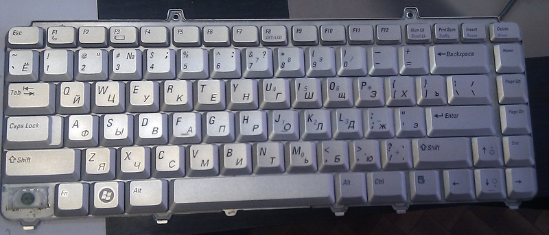
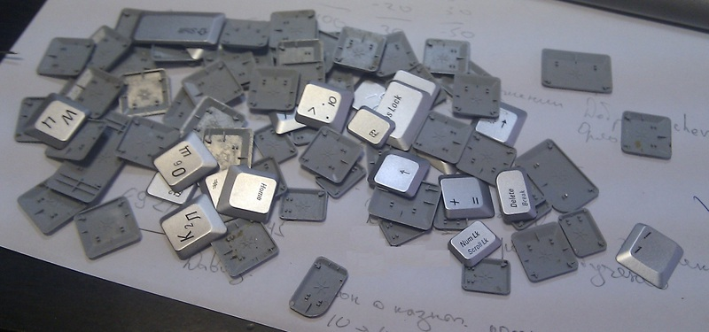
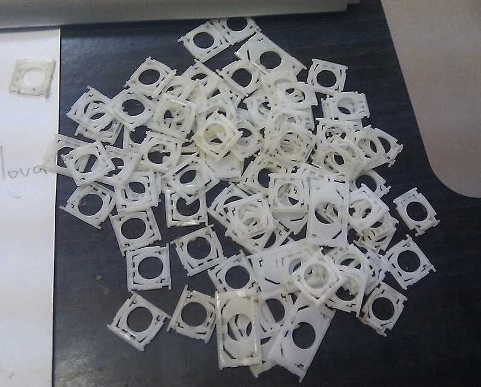
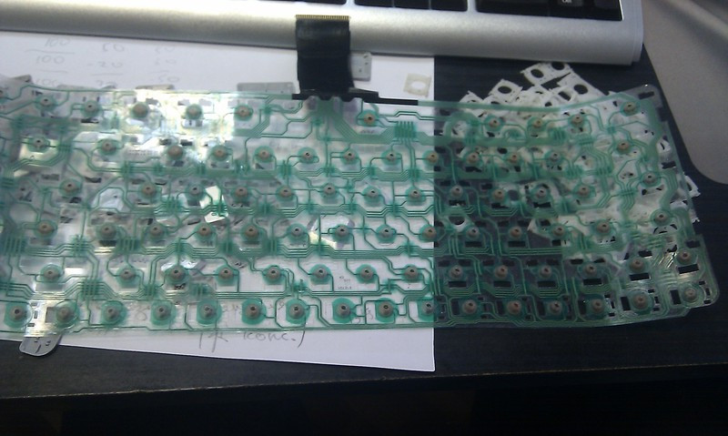
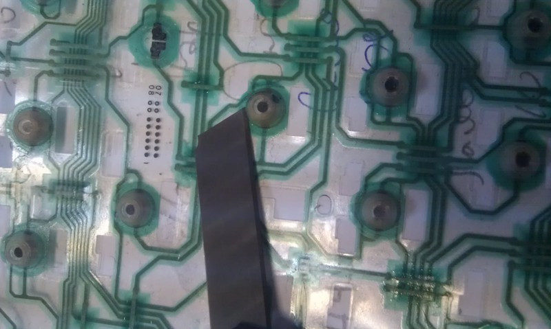
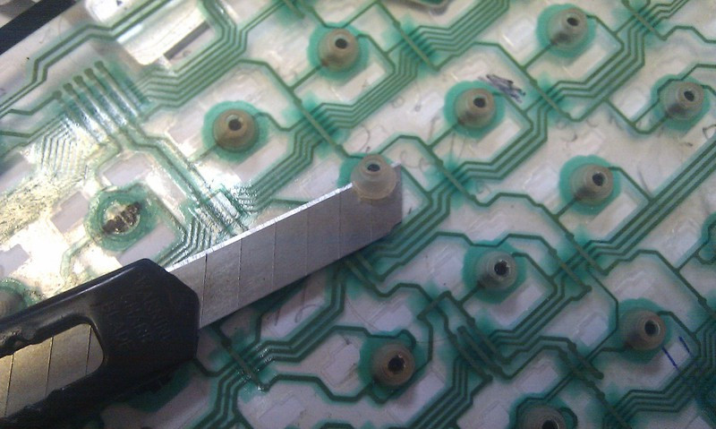
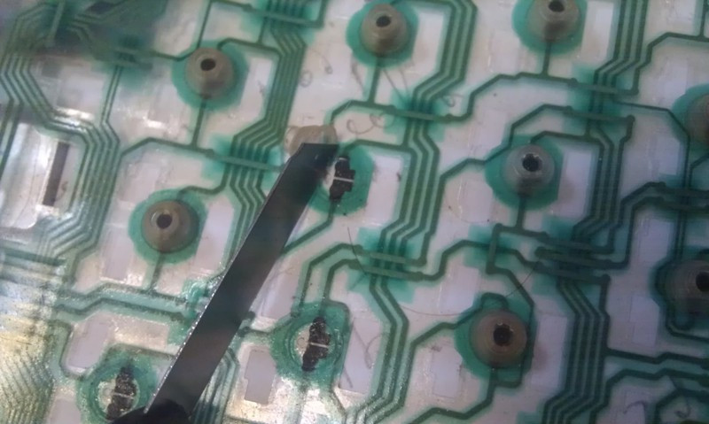

Диагностика и устранение неисправностей
Ремонт клавиатуры

Для начала необходимо снять клавиатуру с ноутбука, а затем снять с нее все клавиши и качельки.


После того как снято все лишнее перед нами появится сама плата. К металлическому корпусу клавиатуры она приклеена.
При ее отделении от металла будьте аккуратны и не порвите ее, так как есть шанс зацепиться ей за крепления качелек.

После того как я снял плату и начались проблемы. Еще раз перечитав все статьи на эту тему, я обнаружил, что ни одним из способов дальше плата разбору не поддается.
Повертев ее в руках некоторое время я нашел выход, как ни странно который никто не осветил в интернете.
А именно: срезать резиновые колпачки на неработающих клавишах. Для этих целей отлично подходит канцелярский нож.
Внимание! При срезе колпачков не прилагайте много усилий, пытайтесь отклеить их от полиэтиленовой платы. В дальнейшем они нам понадобятся для обратного монтажа.


После того как нужные колпачки были срезаны, будут видны не защищенные контакты, именно их мы и искали.
Аккуратно протираем их и резиновые колпачки (изнутри) спиртосодержащей жидкостью. И приступаем к процессу сбора.

Процесс сбора полностью идентичен процессу разбора, тут следует лишь осветить момент возвращения на место резиновых колпачков.
Их необходимо аккуратно приклеить, я сделал так:
1) Выдавил небольшую лужицу «Супер Момента — гель» на лист бумаги
2) Аккуратно стараясь не замазать ничего лишнего смазал клеем край резинового колпачка которым он крепился раньше к плате
3) Не прилагая усилий приложил его к плате
©Толмачев Александр